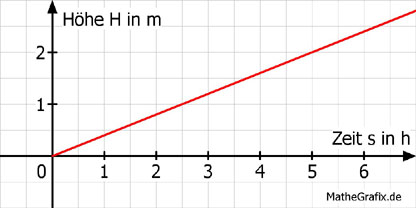

Lineare Funktionen Aufgabe 97 In einem Schwimmbecken steigt beim Befüllen der Wasserspiegel um 0,4 m pro Stunde. Im vollen Becken steht das Wasser 2,5 m hoch. a) Wie lange dauert es in h, bis das Becken gefüllt ist? b) Das Becken ist 4 Stunden befüllt worden. Wie hoch steht das Wasser in m? a) Höhe H = 0,4 * Zeit s 2,5 = 0,4 * s | :0,4 s = 6,25 h  b) H = 0,4 * 4 H = 1,6 m